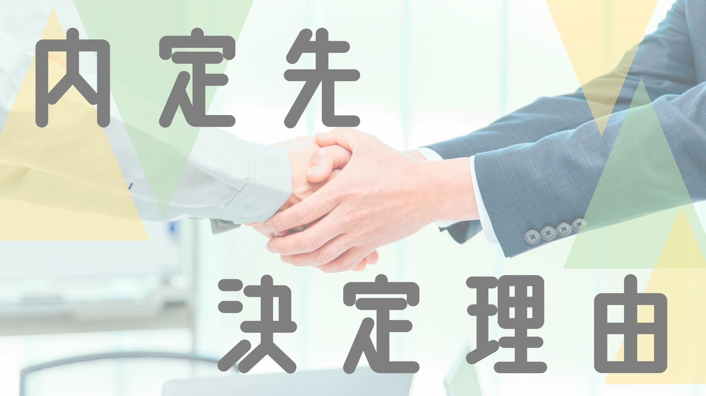

内定先決定理由コラム
理系学部生・デベロッパー
1.理系学部生、就職か院進か迷う（春～夏）
2回生の春休み。理系学部生は3回生のときは実験・4回生からM2までは研究室というのが通常なので、この時期は比較的何も考えずに遊ぶ学生が多いのですが、私は非常に悩んでいました。
それは学部で就職するか院進するかです。
もともと食べることが大好きで食品の研究ができたらいいなーという想いで大学・学部を決めたものの、働くときは何かを企画したりアイデアを出す仕事をやってみたいなと漠然と思っていました。また働いて早くお金欲しいなー、いっぱい稼ぎたいなーという欲もありました。かといって、研究室もまだ経験してない、実験ですらあまり経験していないのに、学部就職に決めてしまっていいのか、せっかく理系に進学したのに理系の醍醐味である研究の道を閉ざしていいのか、という想いもありました。
そう、私はとにかく迷っていたのです。
しかしそんな困っているときに救いの手が私に降り注ぎます・・・
そう、、、エンカレです！！(エンカレのステマみたいになってるけどちがいますよ）
エンカレは知り合いの同期に紹介されて入りました。
こんな就職するかまだ決まってないやつが入っていいのか最初はためらいましたが、学部就職にするか院進か迷っている人でも入っていいとのことだったので、私は相談目的で入りました。
早速初回面談の担当者の方に上記の悩みを相談すると、「とりあえず就活やってみるのがいいよ。もし院進するってなっても、一回就活経験してるからこそM1のとき楽になるし、万が一院試に落ちたときの保険にもなるしね」と言われました。
私は確かに〜！！って思い(割と人の言うことを信じやすい自分の性格も影響してるかもしれませんが)、とりあえず就活始めてみるか！損は無いし！くらいの軽いノリで、就活を始めました。
それは学部で就職するか院進するかです。
もともと食べることが大好きで食品の研究ができたらいいなーという想いで大学・学部を決めたものの、働くときは何かを企画したりアイデアを出す仕事をやってみたいなと漠然と思っていました。また働いて早くお金欲しいなー、いっぱい稼ぎたいなーという欲もありました。かといって、研究室もまだ経験してない、実験ですらあまり経験していないのに、学部就職に決めてしまっていいのか、せっかく理系に進学したのに理系の醍醐味である研究の道を閉ざしていいのか、という想いもありました。
そう、私はとにかく迷っていたのです。
しかしそんな困っているときに救いの手が私に降り注ぎます・・・
そう、、、エンカレです！！(エンカレのステマみたいになってるけどちがいますよ）
エンカレは知り合いの同期に紹介されて入りました。
こんな就職するかまだ決まってないやつが入っていいのか最初はためらいましたが、学部就職にするか院進か迷っている人でも入っていいとのことだったので、私は相談目的で入りました。
早速初回面談の担当者の方に上記の悩みを相談すると、「とりあえず就活やってみるのがいいよ。もし院進するってなっても、一回就活経験してるからこそM1のとき楽になるし、万が一院試に落ちたときの保険にもなるしね」と言われました。
私は確かに〜！！って思い(割と人の言うことを信じやすい自分の性格も影響してるかもしれませんが)、とりあえず就活始めてみるか！損は無いし！くらいの軽いノリで、就活を始めました。
2.インターン応募しまくる参加しまくる（夏～冬）
2.1 夏インターン
結局、本格的に就活を始めたのは6月頃でした。まず就活を始めるにあたって、私は就職活動の軸を決めました。就職活動の軸といっても、自分の欲望に忠実な働き方を決めたという感じです。年収そこそこ高い、福利厚生が充実している、残業時間はあまり気にしない(プライベートなくなるレベルまでは無理だが)、なるべく東京もしくは大阪で働きたい、自分がイメージしやすい身近な商材を扱いたい、知名度がそこそこある・・・などです。
そうやって決めていく中で、私は、もともと事業としても興味のあった食品飲料業界と憧れのあった不動産デベロッパー業界に興味がわきました。
ただサマーの時点では業界を狭めたくなかったため、(もしかしたら思わぬ業界や企業が自分にとっては良いのかもしれない、後悔はしたくないという思いが強く)、いろいろな業界にエントリーすることに決めました。説明会や企業HPを見て、1mmでも良いなと思った企業にはエントリーしようと思いました。
そこからは怒濤のES・webテ三昧です。
今振り返っても私の就活は質より量だったなと思います。ESを書きまくっては添削してもらい、またWebテは対策本は買わずひたすら選考のときに受けまくるという、数うちゃ当たるスタンスでした。結果的には夏は50社出して15社くらい受かりました。
（ちなみに・・・）ここで夏インターン選考での後悔を書かせていただくと、
・夏インターン落ちたら秋冬インターン申し込めない企業がある
・webテ本選考まで使い回しの企業がある
っていう二つです！これで私はまあまあ本命の企業3つに涙することになったのでくれぐれも気をつけて欲しいです！！
少し本題とずれてしまいましたが、まとめると、私はインターンの時点では食品とデベに興味があるものの、完全には業界は絞らずいろんなところを数重視で受けました！で、結果的に1dayも合わせて15社のインターンに参加しました。(2ヶ月の夏休みのうち、だいたい1ヶ月分くらいはインターンだったかな）
（ちなみに・・・）私は一応体育会に入っていたのですが、なぜここまでインターンに参加できたかというと、コロナ期間で屋内の体育会系部活は活動自粛だった＆インターンほぼ全部オンラインだったっていう理由が大きいです。その意味では、コロナによって就活しやすかった代だと思います・・・ただ、特に体育会学生はここまでインターン参加しなくてもいいと思います。もちろん時間があったら参加してほしいのですが、15社のインターン参加というのは私としては非常に多く、時間的にも身体的にも大変だったからです。私みたいに質より量理論で就活している人は、どうかパンクはしないようにスケジュール組んで、ちゃんと1企業1企業全力でインターンに挑むのをおすすめします。
そんなこんなで、私は15社のインターンに参加しました。詳細は、食品、鉄道、金融、人材、コンサル・・・などです。
（あれ！デベないじゃん！って思った方。そうです、夏はデベ全落ちです・・・つらいね）
夏インターンでは基本メモをとりながら、昼食はひとりでさっとラーメン行きながら、リモート長時間インターンを乗り切りました。
夏インターン参加後の気持ちとしては、食品と鉄道とクレカの志望度がぐぐんと上がりました。食品はまず私自身大好きな商品を届けるのはイメージしやすくやりがいもあるなあというところと、業務用営業では飲食店の経営サポートまで踏み込めるところ、量販店営業では小売店と二人三脚で売り場作りを担当できるところ・・・などなど、人と関わりながら人の心を動かすための営業ができるところに非常に興味を持ちました！鉄道に関しては、デベ要素結構強いなあっていうところ(沿線開発ができる、ソフト面ハード面問わず開発できる）に惹かれました。クレカはデータマーケティングがめっちゃ楽しそうっていうところと商業施設だったりいろんな業界と提携できるところに興味を持ちました！（ちょろい）
そんなこんなで、食品とデベ・鉄道とクレカを主に志望することにしました！（業界あんま絞れてないけど）
2.2 秋冬インターン
秋冬インターンもいっぱい出したいなあ、優遇ルート乗りたいなあ（デベは特にインターン参加大事）って思ったものの、私の学科では欠席したら死ぬ後期の実験があったためそこまで多くは出せず、結果的には20社くらい出しました。その中で1day合わせて6社が受かり、食品、デベ、鉄道のインターンに行くことができました！そして夏インターンと特に変えたところ、秋冬インターンのエントリーと同時にやっていて力を入れていたのが、面接対策です。私は面接がなんだかんだ一番選考において重要だろうと考え（22卒の友達も言ってた）、マッチャーというアプリを利用して、30人以上の人に模擬面接をしていただきました。
最初は面接させていただくのが申し訳ないくらい、結論ファーストができない、質問に対しての回答が若干ずれている、抽象的なことしか言えない・・・と散々でしたが、アドバイスをいただき事前準備をしっかり行った結果、徐々に改善され、面接官との会話を楽しむ余裕が生まれるまでに成長できました。まじで面接大事だと思うので、事前準備と模擬面接と反省点書き出しの3ステップを繰り返せば、必ず力になると思います。
（ちなみに・・・）某食品メーカーのインターン面接では、趣味・特技欄をごりごり深掘りされる面接で、私は特技に書いていた「レベルの低い声ものまね」を披露することになりました。面接官のなんとも言えない反応にはずかしくてしにたくなりました
ちょっと話が脱線しましたが、秋冬インターンには合計6社参加しました。2社を除いてはどれも3~4days対面だったため、優遇要素が強いところも多く、全力で仲間とコミュニケーションをとりながら挑みました。
秋冬インターンでの心境の変化は夏インターン参加後と特に変わらなかったです。やっぱり食品・デベ・クレカどれも事業としては面白そうだな～と思ってしまい（ちょろいので）どれも同じくらい行きたかったです。となると、人や職場環境や待遇などで比較するしかなく、その中で私はデベ第一志望でいこうと決めました！実際にデベロッパーの社員の方々のOB訪問は10回はしたのですが、どの社員の方も、まちづくりに対する情熱を内に秘めていて、ただコミュニケーションが割とフラットで、論理性やスマートさもあるというように、私からすると社会人の理想像みたいな人たちばかりいました。「将来自分の子どもに、この物件に俺（私）が携わったんだ～と言いたい」とおっしゃる社員の方もいて、私からすると非常にわくわくするような夢のある話をしてくださいました。よって、ここで私の第一志望が決まりました。やっぱりOB訪問って大事ですね！！
3.怒濤の本選考スタート（冬～）
3.1 本選考（食品・クレカ）
そして2月。インターンも落ち着き、あとは本選考に向けて準備するのみ。というところ、私は非常に不安を抱えていました。この時点で内定0だったからです。私の志望業界はまだ本選考がスタートしてないというものの、周りのコンサル志望の友達はばんばん内定をもらっていたり、もう就活終えてる人もいたりしました。そんな優秀な人たちと比べてしまい、このままで本当に自分は大丈夫なのか？無い内定で院試勉強した方がいいのではないか？と焦っていました。心配性な私は、全然志望業界ではないものの本選考が2月にあり3月上旬には内定がもらえるIT業界を3社受けました。しかし志望動機がまるで無いので企業の方に刺さるようなことが言えず、2社落ちました。唯一、志望動機を一切聞かれなかった1社だけ内定をいただけました。1社内定をいただけたので心の安定には繋がりましたが、やっぱり内定無くて焦ってるからといって業界広げても意味ないんだな～って今となっては思います。当時は焦っていたので内定がほんとに欲しくてたまらずやってしまいましたが。
そこで最低限の内定だけ確保した私はやっと、3月から食品とクレカに集中して本選考に臨むこととなります（デベは基本6月から面接スタートなので）。
食品は1dayインターンが多かったため、ほぼ優遇ルートはもらえず、普通に本選考から受けることになりました。食品は自分の体験と御社の結びつき、また志望動機が非常に大切なのでそこを意識して臨んだ気がします。どこの食品メーカーも国内市場は縮小していてこれからは海外だ！っていう時代なので、自分の高校時代のオーストラリア留学で感じた日本食の位置づけなどを中心に語りました。またパン屋のアルバイトで食品ロスについて施策に取り組んだことがあり、食品ロスという観点で御社に貢献したいという気持ちを訴えました。食品ロスの観点（＝需要予測を高めて過剰生産をなくすことや、廃棄に近い商品と生活者をマッチさせるフードシェアリングや途上国への提供）で志望動機を言ったことは、面接官からもその視点をもつ就活生は少ないと絶賛され、非常にうれしかった記憶が残ってます。あとは商品愛、御社愛をぶつけて臨み、2社から内定をいただくことができました。
一方、クレカは優遇ルートをもらえ、2社は二次面接と最終面接で内定がでる形でした。インターンでの感想をもとに志望動機を構築し、クレカのシステム面やセキュリティ面を学んでから説得力の持つ営業やマーケティングをしたいと、具体的なキャリアプランを言った気がします。また今はクレカやキャッシュレス業界は大激戦の時代なので企業ごとの位置づけであったり、キャッシュレスの普及率を上げるためにはどうするかといったことも問われました。ただ基本的には人柄面接なので、どういうことを頑張ったと自信満々に言えるように、こつこつ努力できることをアピールしました。結果、2社から内定をいただくことができました。
3.2 本選考（デベ）
そしていよいよデベ面接。私は1社だけインターンからの優遇ルートをもらえ、二次面接スタートでしたが、それ以外は普通に本選考でした。その優遇をもらった1社は正直超行きたいところでしたが、5月下旬に受けた二次面接で残念ながら通過連絡が来ませんでした。今思えばインターンであまり活躍できなかったこと、緊張しすぎていたこと、来て欲しい質問が来なかったため自分のペースで面接ができず、それに伴い志望度の高さもアピールできなかったことが敗因だと思います。正直この会社に落ちてから超へこんでしまい、デベロッパーは本選考ルートが厳しいとよく言われているので、もう無理なんじゃないか？と心の奥底では思っていたりしました。ただ、最後まで走りきりたい！落ちたら納得いくから可能性があるうちは頑張りたい！と思い、他のデベの本選考も受けることになりました。ただ、デベって本当に面接までたどり着くのが難しいんですよね・・・5社出したのですが、1社だけです、面接までいったの。他は全部ESで落ちてしまいました。もっと物件見学しとけっていうことですかね、たぶん。ただその1社が奇跡的に本当に超行きたい内定先だったので、よし面接3回あるけど絶対全力尽くすぞ！っていう思いで臨みました。
そして迎えた一次面接。オンラインで、時間は25分程度でした。社員の方からはめちゃめちゃ自己分析に関する質問をされ、志望動機などは全く聞かれませんでした。「異なる価値観をもつ部員を束ねる際に意識していることは？」という質問をされ、私は事前に答えを用意していたので、よっしゃきた！と思い、実際に意識していることをデベの仕事でも生かせてイメージしやすいようなものを答えました。そして志望動機を一切聞かれなかった分、「最後に一言ありますか？」の質問のときに、内定先で好きな物件ついて話し、志望度の高さをアピールしました。オンラインだったので、面接官の表情が見えづらかったですが、面接官の方が「そうかその物件の工事のときは（筆者）さんはまだ高校生だったのか」と食いついてくれ、最後に一言のくだりで、なんだかんだ会話7ラリーくらいした気がします。全然最後に一言ではない。でもこれで私はもしかして一次通った？！と期待が高まりました。翌日電話で通過連絡が来て、私は二次面接の切符を手にしました。
そして二次面接。東京で対面で面接を受けるのですが、初めに30人くらいの就活生が同じフロアに待機することになりました。9:10の集合時間ぎりぎりに来た私は、すでに8割以上が座ってるフロアに恐る恐る入り、指定された一番前の座席に座りました。まじかこわいよ～こんな人数いるんだ～って思い恐怖感がありましたが、隣で奇跡的に他のインターンで同じになった学生が座ってました（デベはインターンでの知り合いがまじで増えると思います。私も2社だけしか参加できてないけど、そこそこ顔見知りいます）。相づちだけして、心の中で「お互い頑張ろう！」と言いました。
まず面接が始まる前に、最終面接のときに使用するモチベーショングラフと短い小論文を20分でかきました。「始めてください」と企業の方に言われて、30人が用紙をひっくり返し、書き始めるという形で、まじで入試そのものでした（やだね～～）。ただ20分という時間があまりにも短く、最後の方めっちゃ字汚くなって出しました。とりあえず用紙埋めてればいいだろうという思いしかなかったです。
そして面接。30人の学生がそれぞれのブースに移動して、同時刻に面接を受けるのですが、まあうるさかったです（おい）。隣のブースでは他の就活生も面接を受けており、その声が非常に聞こえたため、面接官の質問を聞くのが難しかったです。めっちゃ前のめりで質問を聞いて回答してたと思います。今思えば、集中力を保つのが難しい環境の中で、自分をアピールできたのが良かったのかなと思っています。聞かれた質問は1次面接と同様に自己分析に関する質問が多く、高校時代の部活と大学時代の部活の取り組み方の違いをめちゃめちゃ聞かれた印象があります。またここでも志望動機は聞かれなかったので、「最後に一言ありますか？」の質問のときに志望動機を語り、商業施設の運営など既存物件に付加価値をつけたいという思いを伝えました。時々面接官の質問が聞こえず聞き返してしまったりしたことから落ちてもしゃーないなと思っていましたが、約1時間後電話が来て、「今日最終面接これますか？」と言われました。心の中できたー！と思いながら、うわずった声で返事をし、同じ日に最終面接を受けることになりました。
そしていよいよ最終面接。面接前に学生4人で待機するのですが、そこになんと二次面接で一緒だった就活生がいました！お互いびっくりして頑張ろうと言い、臨むことになりました。
まず案内されたのが広い休憩スペースです。就活生1人に対して、企業の人1人が付き添ってくれ、ドリンクやお菓子などを大量に渡されました（贅沢や）。「今日僕たちは学生の緊張を癒やすために召集されました。なので緊張をほぐすのが僕たちの仕事です」と企業の人は言ってくれ、めちゃめちゃ緊張している私に話しかけてくれました。ときどき「今どのくらい緊張してるマックス100だとすると？」と言われ「98％です」と最初答え、面接直前に再び聞かれたときは「60％です」と答えました。そのため38％も緊張を癒やしてくれました。本当に最終面接の休憩スペースが豪華で、20分ほどしかいれませんでしたが、ずっといたかったです。ちなみに面接を終えた学生から、どんな雰囲気だったか、どんな質問が来たかを聞けるスーパーチャンスタイムがあり（私も面接終了後に次の学生に言う）、そこでいっぱい質問をして、面接に臨みました（なんだこのシステム・・・ありがたかったです）。
そしていざ最後の面接。４人の役員の方が並び、マスクもとっての面接だったため、非常に緊張感のある空間でした。大学時代のことはあまり聞かれず、幼少期から高校までの話で気になったところを中心に深掘りされました。基本１名の方が質問していたが、最後に残りの３名から1つずつ質問されました。「人に対して怒ったことある？」「人と比べてしまうとはどういうこと？」と少し変わった質問も来ましたが、落ち着いて自分の素直な考えを述べたことと、最後に一言で「本当に御社に入りたいです！！！活躍します！」と熱意を持って伝えられました。正直悔いはない！そう思いながら面接を後にしました。
面接を終えると、二次面接と最終面接一緒に受けた友達と喋りました。「どうだった？」「まあ悔いはないよね」「私も」「でも（内定先）の倍率って5倍って言われてるよね」「それな」「この中で1人受かるか全員だめか、じゃない？」「・・・うん、そうだよね」「来たら連絡して！」「うん！私も、気遣うとかいらないから連絡して！」「わかった」そんな会話を交わし、別れました。
面接が終わったのは18:00。翌日研究室があったためすぐ帰ろうと思い、19:00前の新幹線に乗りました。受かっている人はその日中には連絡がくると就活情報サイトに書いてあったので、どきどきしながら新幹線車内で待っていました。ただ待っても待っても来ない。さすがに受かってたら20:00ごろには来るだろと思ってても来ない。ああ落ちたか、いやまだわからないを繰り返し、気が気でありませんでした。
そして京都駅到着。あ～結局こなかったなと思ったとき21:00ごろ電話がありました！まさか！と思って出ると、「内々定です」と言われ、思わず小さく叫んでしまいました。その場で承諾し、最初は受かった実感がなく興奮が収まらなかったですが、徐々に本当に受かってよかったな～丸1年かけた就活がやっとおわるんだな～としみじみしました。ちなみに一緒に受けた友達も受かってました。本当に6/1は人生が変わる長い一日でした。でも熱い夜でした。
そして今、私は宅建の勉強をがんばっています。なんとしてでも入社前に取得しなければならないのです！同期や社員の方々も良い人たちなので、これから夢に向けてがんばります！